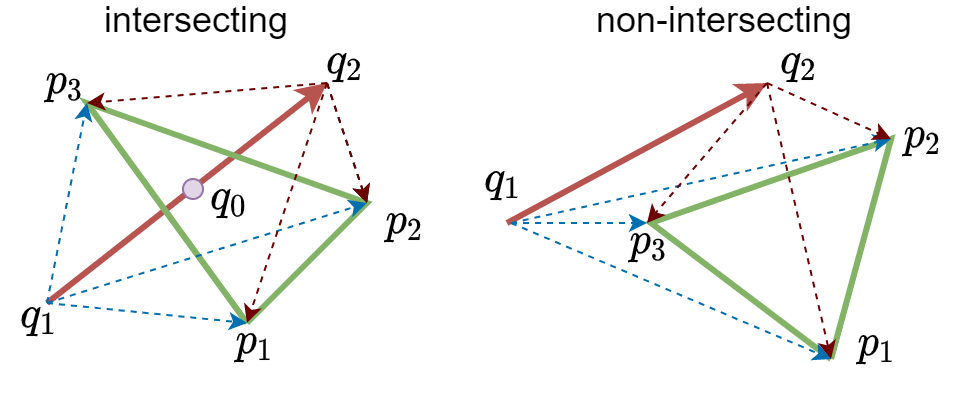

Longitudinal Space Charge Modeling in the CERN PS
Alexander J. Laut
A thesis presented for the degree
Master of Physics
Department of Physics
Plasmas, Lasers, Accelerators and Tokamaks
Paris-Saclay University
Orsay, France September 2021
First, I’d like to thank my supervisor, Dr. Alexandre Lasheen, for providing me this amazing opportunity to work at CERN and for being extraordinarily accommodating throughout my technical studentship. Logistically, he helped me navigate moving between countries and continents during a particularly dynamic time in history. He was an exquisite mentor, learning resource, and peer with whom I’m thankful for having had the opportunity to work with. Additionally I’d like to thank others within the SY-RF-BR section at CERN for their insight during section meetings and other technical discussions.
I’d like to thank the professors at Université Paris-Saclay, Jean-Marcel Rax, Guy Bonnaud and Sophie Kazamias, for encouraging me to pursue the M2 GI (Grands-Instruments), subsequently named M2 PLATO (Plasmas, Lasers, Accelerators and Tokamaks). This program was an amazing learning experience as well as an opportunity to explore the various scientific institutions located within France and Switzerland.
I would also like to thank my previous employer, Jagadishwar Sirigiri, and others at Bridge12, for the immense knowledge and experience I accumulated while working there for almost 4 years as a Scientist. Both the hands-on and analytic experiences I developed there proved instrumental towards my success as a master’s student.
Lastly I’d like to thank my parents, Philip and Donna, and my sister Gabrielle.Their all encompassing support, intrigue, and encouragement with my endeavors as a young physicist/engineer has kept me motivated.
The European Organization for Nuclear Research, or CERN, is an international institution tasked with providing particle accelerators to scientists for purposes of conducting high energy physics experiments. It is the home of the LHC (Large Hadron Collider) accelerator chain, comprised primarily of LINAC4, the PS (Proton Synchrotron), the PSB (Proton Synchrotron Booster), the SPS (Super Proton Synchrotron) and the LHC itself, a particle accelerator with circumference of 27 kilometers around. It is located across the Franco-Swiss border local to Lake Geneva, the Jura mountains, and Mont Salève.
The LHC collides energetic and intense proton bunches against one other so that the resulting particles produced in these collisions can be observed and analyzed. Upon analysis, these observations may provide evidence for particle’s predicted to exist according to the Standard Model of particle physics, namely the Higgs Boson. These particle’s may vary in charge, spin, mass, momentum, etc. Often weakly interacting with matter, so their qualities must be quantified through the use of large particle detector systems. For example, the CMS (Compact Muon Solenoid) experiment is comprised of solenoids to probe a particle’s momentum from perceived magnetic rigidity, calorimeters to estimate particle energy deposition, and micro-channel plates to qualify time-of-flight and generalized position tracking measurements, as depicted in Figure 1.2.
To verify the existence of the Higgs Boson, physicists must be able to resolve the energy spectra corresponding to the various particles produced in proton-proton collisions. To mitigate large experimental uncertainty due to collision variance and the particle product variability, the total number of interaction events must be increased. This can be done by increasing the interaction luminosity along with total acquisition time. We see in [eq:luminosity] how, for a bivariate gaussian beam, the luminosity (\mathcal{L}) scales with number of bunches n_B, particles per bunch N and inversely with beam width \sigma per
\mathcal{L} = \frac{n_b N^2f_{rep}}{4\pi\sigma_x\sigma_y}H_d \label{eq:luminosity}.
Because acquisition time is already a strong limitation, there is an ever persistent effort to improve the beam luminosity, effectively defined by the quality of the injectors. This is the motivation behind the HL-LHC (High Luminosity LHC) initiative whose goal is to increase beam luminosity by a factor of 10 . The LIU (LHC Injectors Upgrade) project is directed to upgrading the injectors to deliver the required additional beam brightness .
As particle beam intensities are increased to improve luminosity, the electromagnetic fields of charged particle bunches will self-interact. This interaction, named space-charge, may cause the bunch to repel apart, break up, or induce other instabilities and perturbations yielding to overall transmission loss. In the transverse plane, maintaining a tight beam size is accomplished through the use of strong focusing optics and by reaching higher beam energies whereas in the longitudinal plane, space-charge becomes critical during injection and extraction where the efficiency of transferring bunches from one ring to the next is highly dependent on how short the bunch length can be kept. Instabilities that can lengthen the bunch length can therefore negatively impact total beam brightness factored towards the LHC.
As will be discussed further in the text, a particle within a bunch will experience a longitudinal induced voltage \Delta V = \frac{-i}{\omega_s}\frac{Z}{n}\frac{d\lambda}{d\tau} dependent on the longitudinal space-charge impedance given by \frac{Z}{n} = -i\frac{Z_0}{\beta\gamma^2}g which scales inversely with \beta \gamma^2. Accordingly, induced voltage due to space-charge is generally a low energy effect except at the highest bunch intensities.
Small perturbations and density fluctuations in the bunch’s longitudinal charge density profile can create self amplifying wakefield fluctuations that can lead to micro-bunch instabilities. As observed in Figure 1.3, a narrow bunch distribution can spontaneously split due to local fluctuations in the bunch profile that have a negative feedback mechanism for promoting further instabilities.
In the PS (Proton Synchrotron), the particle energy is accelerated from 2-26 GeV in 3.6 seconds (Table 1.1). Accordingly where space-charge is an important consideration towards the beginning of its ramp, at relativistic energies, the PS can neglect space-charge towards extraction.
| Parameter | Symbol | Injection | Extraction |
|---|---|---|---|
| Circumference (m) | C | 628 | |
| Kinetic Energy (GeV) | W | 2.0 | 25.0 |
| Lorentz Factor | \gamma_s | 3.1 | 28.7 |
| Revolution Frequency (kHz) | f_s | 452 | 476 |
| RF Harmonic | h | 9 | 21 |
| RF Frequency (MHz) | f_{RF} | 4 | 10 |
| Transverse Tune | Q_x, Q_y | 6.21, 6.24 | |
| Transition Factor | \gamma_t | 6.1 | |
| Bunch Width (ns) | \sigma_\tau | 26 | 1 |
As seen in Figure 1.4, the space-charge impedance is nearly compensated by the ring’s effective inductive impedance near transition energies at which point the synchronism between RF systems, magnetic field ramp, and bunch phase, requires dynamic adjustment to maintain longitudinal stability. Accordingly there is a lot of potential for space-charge induced instabilities to degrade the bunch during ramp and therefore is of particular interest for space-charge studies.
The luminosity of proton-proton collisions occurring within the LHC is almost strictly defined by the beam intensity achieved from the injector chain. At low energies and high intensities, as in LINAC4 and the PS, space-charge effects are fighting to destabilize the beam, hence motivation to raise the injection energy in the PS.
Protons are injected into the PS from the four superimposed rings of the PSB (Proton Synchrotron Booster) as depicted in Figure 1.5.
At these lower energies, space-charge dominates and accordingly particle energies must be increased before bunches can be merged. As observed in Figure 1.6, the PS conducts a series of manipulations where RF voltage profiles of varying harmonics are used to position, accelerate, merge and then split the bunches longitudinally according to the varying space-charge limitations. This BCMS (batch compression matching and splitting) process is visualized in Figure 1.6.
These manipulations are accomplished by a complicated and dynamic RF ramp scheme as depicted in Figure 1.7. This is accomplished through the use of various RF cavities space throughout the PS ring.
When current space-charge approximations are incorporated into longitudinal tracking codes such as BLonD , we can observe that the bunch length oscillation amplitude and frequency can only be matched when current space-charge calculations are reduced by roughly 30%, as seen in Figure 1.8. This discrepancy suggests that there may exist an additional stabilizing phenomena within which the current model for longitudinal space-charge impedance is neglecting.
A possible candidate to describe this discrepancy may be related to the fact that current longitudinal codes neglect transverse betatron motion, suggesting that the variance in individual transverse particle trajectories may lead to describing new phenomena in the longitudinal plane.
This chapter will briefly overview betatron motion in the transverse plane followed by synchrotron motion in the longitudinal plane. Furthermore, bunch wakefields and longitudinal space-charge impedance will be presented to provide context for how particle bunches can destabilize in longitudinal phase-space. The synchrotron frequency, a parameter partially observable by experiment, will be described as will the various ways in which space-charge can affect this quantity.
A particle’s transverse position u(s) (referring to horizontal or vertical transverse positions x and y), and derivative u'(s)=du/ds, equivalent to particle divergence within a focusing lattice, is characterized by the beta function \beta(s), particle emittance \epsilon, and betatron phase \phi so that u_\beta(s)=\sqrt{\beta(s)\epsilon}\cos\phi \qquad u_\beta'(s)=-\sqrt{\frac{\epsilon}{\beta(s)}}\left(\alpha(s)\cos\phi+\sin\phi\right) \label{eq:hills_equations}, solutions to Hill’s Equations. The phase advance \mu(s) from a particle’s initial phase offset \mu_0 is given by \phi = \mu(s) + \mu_0 \qquad \mu(s) = \int_0^s\frac{ds}{\beta(s)}.
Accordingly, betatron motion follows elliptical trajectories in (u-u') phase-space per it’s Twiss parameters \alpha, \beta and \gamma such that \epsilon = \gamma u^2 + 2 \alpha u u' + \beta u'^2.
Given a continuous beta function \beta(s), the Twiss parameters can be derived: \alpha(s) = -\frac{1}{2}\beta'(s) \qquad \gamma(s) = \frac{1+\alpha(s)^2}{\beta(s)}.
A particle’s relative momentum offset (dp/p) or dispersion (\delta) can be incorporated with betatron motion by using the dispersion function D(s): u(s) = u_\beta + u_D= \sqrt{\beta(s)\epsilon}\cos\phi + D(s)\delta resulting in the total transverse trajectories.
A bivariate transverse distribution (x-x', y-y') can be statistically described by its covariance matrix \Sigma, the product of its “root-mean-square" emittance \epsilon, and the Twiss matrix \Omega, encapsulating the focusing properties of the present optics. The statistical emittance \epsilon can be described by the preserved quantity the normalized emittance such that \epsilon_n=\gamma\beta\epsilon.
\Sigma = \begin{bmatrix}<x^2> & <xx'> \\ <x'x>& <x'^2>\end{bmatrix} = \epsilon\Omega \qquad \Omega = \begin{bmatrix}\beta &-\alpha \\ -\alpha & \gamma\end{bmatrix} \qquad \epsilon = \sqrt{\det(\Sigma)}
Such that an injected particle distribution’s covariance matrix matches that of the optics \Omega, the collective motion of the bunch will be such that the beam width throughout the ring can be described by : \begin{aligned} \sigma^2_x(s) & = \beta_x(s)\epsilon_x+D(s)^2\sigma_\delta^2 \\ \sigma^2_y(s) & = \beta_y(s)\epsilon_y \end{aligned}.
As consistent in Figure 2.1, individual particle trajectories are seen in faded paths whereas the bulk group motion is described by the beam envelope as defined by the strong focusing of the beam optics for a matched distribution.
As a particle is accelerated in a synchrotron, magnetic dipoles must strengthen to maintain the particle’s trajectory as consistent with the magnetic rigidity B\rho=\frac{p}{q} where p is particle momentum, q is charge, \rho is bending radius, and B is magnetic dipole field strength. The particle energy gain per turn can be represented by the Panofsky Equation \Delta W = q V_g\sin\varphi where V_g represents the effective RF voltage of a gap, and the RF phase \varphi is defined by \varphi=h\omega t where h is the harmonic number of the RF with respect to the angular velocity \omega of the particle revolution about the ring at absolute time t.
If the magnetic field is to be increased at a rate defined by \dot{B}, there exists a synchronous phase \varphi_s such that the accelerating RF may be modulated so that the bending path of the synchronous particle is maintained, given by \varphi_s=\arcsin\left(2\pi\rho R\frac{\dot{B}}{V_g}\right) where R defines the characteristic machine radius.
In longitudinal phase-space, it is convenient to work in coordinates relative to the synchronous particle where \tau = t - t_s \qquad \delta = \frac{p-p_s}{p_s} \qquad \phi = \varphi - \varphi_s \qquad w = W-W_s define the relative time, momentum, RF phase and kinetic energy of an arbitrary particle with respect to the synchronous particle.
The relative energy kick of a particle accelerated through an RF gap is given by \Delta w = q V(\tau) \qquad V(\tau) = V_g g(\phi) \qquad g(\phi) = \sin\varphi-\sin\varphi_s. \label{eq:kick} where the RF gradient g(\phi) yields the following derivative and anti-derivatives g'(\phi)=\cos(\varphi_s+\phi) \qquad G(\phi)=(1-\cos\phi)\cos\varphi_s+(\sin\phi-\phi)\sin\varphi_s.
In a drift, a particle’s revolution period T evolves with total energy E given by \frac{dT}{T} = \frac{\eta}{\beta^2}\frac{dE}{E} \qquad \eta =\alpha- \frac{1}{\gamma^2} \qquad \alpha = \frac{dC/C}{dp/p} = \frac{1}{\gamma_t^2} \label{eq:drift} where the slippage factor \eta is given by the momentum compaction factor \alpha and the particle’s Lorentz factor \gamma defined by it’s transition energy \gamma_t.
A particle’s evolution in phase-space can be described by combining both the kick [eq:kick] and drift [eq:drift] equations. For convenience, we introduce the following factor \kappa = \frac{\eta}{\beta_s^2E_s} generating the following equations of motion \dot{\tau} = \kappa w \qquad \dot{w} = \frac{qV(\tau)}{T_s} \label{eq:eom}.
For a linear applied voltage V(\tau) where V(\tau) \approx V'(\tau)\tau, the following phase equation for simple harmonic motion can be derived \ddot{\tau}+\Omega^2\tau = 0 such that the oscillation frequency is given by \qquad \Omega^2 = -\frac{\kappa q}{T_s}V'(\tau). Therefore we can identify that the amplitude of our synchrotron oscillation broadly varies with the square of the effective voltage gradient \Omega \propto \sqrt{V'(\tau)}.
For small-amplitude oscillations where \phi \to 0, g'(\phi) \approx \cos\varphi_s therefore V'(\tau)\approx h\omega_s V_g \cos\varphi_s yielding the Synchrotron Frequency \Omega_s^2 = -\frac{h\omega_s^2\eta}{\beta_s^2E_s}\frac{qV_g}{2\pi}\cos\varphi_s \label{eq:synchrotron_frequency}.
Our equations of motion can be derived from the following Hamiltonian \begin{aligned} H & = \frac{1}{2}\kappa w^2 -\frac{q}{T_s}\int V(\tau)d\tau \\ & = \frac{1}{2}\kappa w^2 -\frac{q V_g}{2\pi h}G(\phi) \end{aligned} such that Hamilton’s equations, \frac{dH}{dw} = \dot{\tau} \qquad -\frac{dH}{d\tau} = \dot{w}, are obeyed.
A particle’s trajectory in phase-space can be represented by w(\tau) = \pm \sqrt{\frac{2}{\kappa}\left(H+\frac{q}{T_s}\int V(\tau) d\tau\right)} where the conserved hamiltonion H can be defined by a particles maximum phase-space amplitudes \hat{\phi} and \hat{w} given by H = -\frac{qV_g}{2\pi h}G(\hat{\phi}) = \frac{1}{2}\kappa \hat{w}^2. Given that \dot{\phi} = h\omega_s\dot{\tau} and W(\phi) = G(\phi)/\cos\varphi_s, we can define our particle trajectories arbitrarily by \dot{\phi} = \Omega_s \sqrt{2(W(\hat{\phi})-W(\phi))}.
These trajectories are visualized in Figure 2.2. Particles oscillating near the center with small oscillation amplitudes \hat{\tau}\to 0 remain elliptical whereas particles with larger values in \hat{\tau} experience non-linear and asymmetric RF forces, yielding a “fish" shape.
The separatrix (in black) defines the contour of the Hamiltonian’s local maximum such that particles within will retain stable trajectories. Particles present outside the separatrix will follow unstable trajectories.
The synchrotron period (\Pi) of a particle with given oscillation amplitude \hat{\phi} between the left \phi_L and right \phi_R phase limits is computed by \Pi = \oint \frac{d\phi}{\dot{\phi}} = \frac{2}{\Omega_s}\int_{\phi_L}^{\phi_R} \frac{d\phi}{\sqrt{2(W(\hat{\phi})-W(\phi))}}. For a non-accelerating bucket, \varphi_s = 0, therefore G(\phi) \to \cos\varphi_s(1-\cos\phi), \phi_R = \hat{\phi} and \phi_L = -\hat{\phi} resulting in \Pi = \frac{4}{\Omega_s\sqrt{2}}\int_0^{\hat{\phi}}\frac{d\phi}{\sqrt{\cos\phi-\cos\hat{\phi}}} = \frac{4K(\hat{\phi}/2; k=\csc(\hat{\phi}/2))}{\Omega_s}. If we define the normalized synchrotron tune \mu as \mu = \Omega(\hat{\phi})/\Omega_s, by Taylor series expansion we produce \mu =\frac{\pi}{2K(\frac{\hat{\phi}}{2})} \approx 1-\frac{\hat{\phi}^2}{16} +\mathcal{O}(\hat{\phi}^4) \qquad \phi \approx 4\sqrt{1-\mu} \label{eq:tune_spread}. Accordingly, a distribution of linear charge density \lambda(\phi) an be associated to a spread in normalized synchrotron tune \mu as displayed in Table 2.1 and depicted in Figure 2.3.
| \lambda(\phi) | \lambda(\mu) | d\lambda/d\phi | |
|---|---|---|---|
| Gaussian | \frac{1}{\sigma_{\hat{\phi}}\sqrt{2\pi}}\exp\left(-\frac{1}{2}\frac{\hat{\phi}^2}{\sigma_{\hat{\phi}}^2}\right) | \frac{1}{\sigma_{\hat{\phi}}\sqrt{2\pi}}\exp(-\frac{1}{2}\frac{16(1-\mu)}{\sigma_\phi^2}) | -\frac{\phi}{\sigma^2}\lambda(\phi) |
| Parabolic | \frac{3}{2L_{\hat{\phi}}}(1-4\frac{\hat{\phi}^2}{L_{\hat{\phi^2}}}) | \frac{3}{2L^3}(L^2-64+64\mu) | -\frac{12\phi}{L^3} |
The previous section describes the synchrotron motion of independent particles to circulate within a quasi-elliptical RF bucket. The electromagnetic interaction between particles was neglected and accordingly will be accounted for in the following section. Firstly, the interaction between a particle’s electromagnetic fields and the surrounding conductive aperture, ie: the beam pipe, will be formalized as a wakefield effect of reactive impedance sources. Additionally the self-interaction of charged particles within a bunch can be described as a space-charge impedance and represented as a similar wakefield phenomenon.
Consider charged particles in a bunch passing through a discontinuity in a conductive aperture. The discontinuity will perturb the emitted electromagnetic fields trailing the bunch and form wakefields that will induce a voltage on the following particles. This induced voltage can be given by the convolution of the linear charge density \lambda(\tau) and the wake function \mathcal{W}(\tau) given by \Delta V(\tau)=-\int_0^\infty\lambda(t)\mathcal{W}(\tau-t)dt=-\mathcal{W}*\lambda where the bunch’s longitudinal charge profile \lambda(\tau) is normalized to the total charge Q=qN_b such that Q = \int_{-\infty}^\infty \lambda(\tau) d\tau.
We can define the impedance Z(f) and spectrum S(f) from the Fourier transforms of the wake function \mathcal{W}(\tau) and charge profile \lambda(\tau) respectively given by Z(f) =\int_{-\infty}^\infty\mathcal{W}(\tau)e^{-i\omega\tau}d\tau \qquad S(f) =\int_{-\infty}^\infty\lambda(\tau)e^{-i\omega\tau}d\tau. The convolution of the wake function and linear charge density can be written as the inverse Fourier transform of the product of the spectrum and the impedance, therefore the induced voltage can be re-written as \Delta V(\tau)=-\int_{-\infty}^\infty S(f)Z(f)e^{i\omega \tau}df.
For a linear reactive impedance source such that Z/n is constant, where n = f/f_s, the impedance term can be separated from the integral so that the inverse Fourier transform of the spectrum can be incorporated instead as the derivative of the linear charge density \Delta V=\frac{-i}{\omega_s}\frac{Z}{n}\frac{d\lambda}{d\tau} \label{eq:induced_voltage}.
The relativistic longitudinal self fields of a particle of a long narrow beam can be defined by E_z=-\frac{\bar{g}}{2\pi\epsilon_0\gamma^2}\frac{\partial \lambda}{\partial z}, where the geometry factor \bar{g} is defined by ([eq:longitudinal_self_fields]) \bar{g}=\int_r^b\frac{f(r')}{r'}dr'\qquad f(r)=\frac{\int_0^r\rho(r')r'dr'}{\int_0^\infty\rho(r')r'dr'}=\frac{Q'}{Q}. Here Q’ defines the amount of charge enclosed within the radius r. Averaged about a particle’s revolution during one turn, these self fields will induce a voltage that can be defined as the Longitudinal Space-Charge Impedance given by \frac{Z}{n} = -i\frac{Z_0}{\beta\gamma^2}\bar{g} \label{eq:space_charge_impedance}.
The space-charge impedance can therefore be used to characterize the effective voltage drop of particles within a bunch by combining Equations [eq:induced_voltage] and [eq:space_charge_impedance] to yield our induced space-charge voltage \Delta V_{SC} as a function of the derivative of linear charge density profile and the geometry factor.
\Delta V_{SC} = -\frac{d\lambda}{d\tau}\frac{Z_0}{\beta_s\gamma_s^2}\frac{\bar{g}}{\omega_s} \label{eq:v_sc}
The geometry factors as a function of transverse radial position \bar{g}(r) for a uniform ([eq:g_uniform]), parabolic ([eq:g_parabolic]) and gaussian ([eq:g_gaussian]) are depicted in Figure 2.4.
We observe that the shape of geometry factors for uniform, parabolic or gaussian beams with similar variances is mostly preserved. The geometry factor describing a uniform circular bunch of radius a in conducting aperture of radius b is given by \bar{g}(r)=\frac{1}{2}+\ln\frac{b}{a}-\frac{1}{2}\frac{r^2}{a^2}. The maximum geometry factor, \bar{g}(r=0), corresponds to maximum longitudinal space-charge effects. Particles with large dispersion (\delta) or transverse emittance (\epsilon_\perp) will follow misaligned betatron trajectories with non-zero effective radial position, and therefore will incur reduced space-charge effects as consistent with [eq:v_sc].
Relevant to the oscillation frequency, it is also worth defining the space-charge impedance voltage gradient V'_{SC}(\tau) = \frac{Z_0}{\beta_s\gamma_s^2}\frac{\bar{g}}{\omega_s}\frac{d^2\lambda}{d\tau^2}. The normalized tune shift due to space-charge impedance is therefore \mu = \frac{\Omega}{\Omega_s} = \sqrt{1 + \frac{V'_{SC}}{V'_{RF}} }= \sqrt{1 +\zeta\Lambda} \label{eq:tune_shift}, where \zeta is given by the maximum space-charge impedance and \Lambda describes variation in geometry factor on account of transverse motion \zeta = \frac{V'_{SC}(r=0)}{V'_{RF}} \qquad \Lambda = \frac{\bar{g}}{\bar{g}(r=0)}.
Considering a parabolic charge distribution where \lambda(\tau)=\frac{3Q}{2L_\tau}\left(1-4\frac{\tau^2}{L_\tau^2}\right) \qquad |\tau| < \frac{L_\tau}{2}, the charge gradient is therefore given by \frac{d\lambda}{d\tau} = \frac{-12Q}{L_\tau^3}\tau The induced voltage gradient of a parabolic bunch due to space charge is given by V'_{SC} = -\frac{12Q}{\omega_s}\frac{\Im (Z)}{n}\frac{1}{L_\tau^3}=-\frac{12Q}{\omega_s}\frac{Z_0}{\beta_s\gamma_s^2}\frac{\bar{g}}{L_\tau^3} \label{eq:vp_sc}. We see that \zeta is therefore a constant throughout longitudinal phase-space, modulated only by the RF gradient V'_{RF}(\tau). For the on-axis particle where \Lambda=1, the synchrotron frequency will experience a uniform shift due to space-charge as observed in the tune distributions seen in Figure 2.5. Here we have assumed a uniform space-charge geometry factor neglecting betatron motion and varying aperture size, both to be addressed in the following chapters.
As discussed in the previous chapter, the effects of longitudinal space-charge impedance is described in part by a characteristic geometry factor, describing the induced longitudinal fields due to the position a particle occupies within a transverse bunch distribution in a finite conducting aperture. To re-iterate, the geometry factor describing the longitudinal fields felt of a particle within a uniform cylindrical bunch can be described by \bar{g}(r) = \frac{1}{2} + \ln\frac{b}{a}-\frac{1}{2}\frac{r^2}{a^2}.
Much of this work revolves on accurately tracking and characterizing the beam size (a) and particle radius (r) relevant to this equation, however the PS’s model for beam pipe aperture (b) is of unknown precision and many years out of date, (circa 2013) to wit the updating of said aperture profile by manual tallying is time consuming, tedious, and error prone.
The most recent model, as depicted in Figure 3.1, is old and assumes for elliptical geometries. Though this is mostly valid for most of the ring, being an elliptical beam pipe, 35 x 73 mm wide, there are numerous nuanced cross sections of varying components such as septa, bellows, pump-out ports, etc. whose electrical boundaries aren’t incorporated into this model.
The PS and it’s sub-assemblies can be conveniently represented as triangular meshes, portable in STL (stereo-lithography) files, as depicted in Figure 3.2.
The first objective is to define a reference-trajectory R(\phi) in curvilinear coordinates consistent with a “Frenet-Serret" coordinate system such that a torus can be “inflated" until collision with the electrical aperture of the model are identified. Our cartesian model can be described by toroidal coordinates (r,\theta,\phi) from: \begin{aligned} x & = (R(\phi)+r\cos\theta)\cos\phi \\ y & = (R(\phi)+r\cos\theta)\sin\phi \\ z & = r\sin\theta, \end{aligned} where R(\phi) serves the reference radius as is defined by the geometry of the PS’s 100 straight sections (SS) and 100 magnet units (MU). A schematic of the reference trajectory for one of the PS’s 36^\circ sub-sectors is depicted belpw in Figure 3.3.
We can use this definition of reference trajectory R(\phi) to “unwrap" the PS ring model into equivalent linearized, transforming our model coordinates into curvilinear (x, y, s) and so to detect the aperture, a straight cylinder originating about the reference trajectory needs to be "inflated" until an intersection between surfaces is detected and recorded.
To perform this virtual inflation of our collision surface with the mechanical model, the Möller–Trumbore intersection algorithm can be used to compute intersection angles with the PS . It is commonly used in 3D graphics to efficiently detect and compute the intersection between light rays and polygons as well is it easily parallelized. In Figure 3.4, a point source is cast through a spherical shell to demonstrate the technique. The algorithm is able to evaluate each light ray with all faces to determine if an intersection is possible and if so, where. Details for this algorithm are elucidated in Appendix [eq:moller].
After transforming the cartesian mechanical model of the PS to curvilinear coordinates, a line source was “illuminated" along the central beam path whose ray intersections were detected. These illuminations were performed on each of the 100 magnet units and straight sections individually and then combined to produced an updated and detailed aperture as depicted in 3.5. The distinctive colors of the newly defined aperture coincide with a preservation for component granularity, being able to attribute specific aperture coordinates along the beam path with a particular magnet unit or straight section, allowing for easy verification.
By using this automated technique as opposed to manually generating an aperture, details could be queried at much higher longitudinal and poloidal resolutions, as seen in Figure 3.6. Additionally, features for smaller and yet frequent discrepancies could be automatically identified as in the case of pump-out ports and bellows.
Additionally, details of RF cavities, diagnostic ports and septa can be compared with that of the older model per Figure 3.7.
In summary, it has been shown that a high resolution aperture of the PS can be automatically generated to be consistent with the 3D CAD model generated by the mechanical team. This model can be conveniently imported when changes are made, or on an automatic basis. This aperture will contain much more detail than likely necessary for the purposed of longitudinal-space charge studies, however this procedure may allow for the approximation of no-elliptical geometries.
The optics of the PS are described by the beta function (\beta(s) and dispersion function D(s) as depicted in Figure 4.1.
For simplicity of transverse tracking purposes and subsequent development of analytic relationships, the periodicity of these optics can be accurately represented as a two-term Fourier series \beta(\theta) \approx \sum_k \beta_k e^{i k\theta} \qquad D(\theta) \approx \sum_k D_k e^{i k\theta} \label{eq:optics_decomposition} whose coefficients are described in Table 4.1. This approximation reduced the computation time for the subsequent transverse tracking simulations and helped avoid interpolation artifacts.
| \beta_x(\theta) | \beta_{0,x} | 16.89 | \beta_{50,x} | +4.43-2.84i |
| \beta_y(\theta) | \beta_{0,y} | 17.01 | \beta_{50,y} | -4.46+2.86i |
| D_x(\theta) | D_{0,x} | 2.66 | D_{50,x} | +0.34-0.22i |
| D_y(\theta) | D_{0,y} | 0 | D_{50,y} | 0 |
A transverse tracker was developed to solve for betatron trajectories described by solutions to Hill’s Equations (Equations [eq:hills_equations]). A bivariate gaussian distribution with matching covariance matrix (\Sigma) to that of the PS’s Twiss matrix (\Omega) was “injected" and tracked about one turn in the synchrotron as depicted in Figure 4.2.
Given the ability to track the transverse locations of individual particles propagating through the PS lattice relative to the transverse particle distribution itself, each particle’s geometry factor can be computed and observed to vary along the ring. These geometry factors can be averaged resulting in the definition of the effective geometry factor, characterizing the particle’s turn-averaged experienced space-charge, dependent on the optics, aperture, and the particle’s characteristic emittance, phase advance and dispersion.
\bar{g}_{eff} \propto \bar{g}(\epsilon_\perp, \mu_0, \delta)
The transverse tracker was accordingly used to build a response matrix to predict a particle’s effective geometry factor given it’s initial conditions (\epsilon_x, \epsilon_y, \delta) within a known beam of characteristic statistical emittance and width (\epsilon_\perp, \sigma_\delta). In relation to dispersion, Figure 4.3 indicates a parabolic dependence with the effective geometry factor and a linear relationship with transverse emittance. A particle’s phase-advance appears to have minimal impact on the effective geometry factor.
\bar{g}_{eff} \propto \bar{g}_{max} - C_0\delta^2 - C_1\epsilon_x - C_2\epsilon_y
We see however that the domain for \bar{g}_{eff} is limited as particles with a combination of very high dispersion or very high emittance are will collide with the beam aperture and be lost. This phenomena is more readily visible in Figure 4.4 where we see the thicker lines (representing higher dispersion) end up being truncated with increased transverse emittance. This figure also more clearly elucidates the exponential relationship between emittance and the geometric factor when dispersion is low.
We see in Figure 4.5 that though changes in geometry factor are dominated by dispersion and particle emittance, along the course of a particle around it’s elliptical trajectory in transverse phase-space, there will be a sinusoidal impact on the geometry factor due to betatron phase-advance, though this can largely be neglected.
These relationships can be summarized in a lookup table represented as a response matrix, visualized in Figure 4.6.
The impact of particle phase-advance was neglected as it’s effect are minimal in comparison to the other dependencies on account of the fact that the transverse tune is large and accordingly a variation in a particle’s initial phase-offset will contribute to little variance in the particle’s effective radial position.
A longitudinal tracker can be developed by discretizing Equations [eq:eom], yielding the turn-by turn “kick" and “drift" components respectively w_{i+1}-w_i \to \Delta w = qV(\tau) \qquad \tau_{i+1}-\tau_i \to \Delta\tau = \kappa T_s w. To include space-charge in our tracker, the induced voltage due to space-charge impedance is include with RF acceleration by V(\tau) = V_{RF} + V_{SC}. The geometric factor \bar{g} is replaced as found in [eq:space_charge_impedance] with the effective particle dependent geometry factor \bar{g}_{eff} for a parabolic longitudinal bunch given by V_{SC} = -\frac{12Q}{L_\tau^2}\frac{Z_0}{\beta\gamma^3}\frac{g_{eff}(\epsilon_x,\epsilon_y,\delta)}{\omega_s}.
Transverse emittance \epsilon_x and \epsilon_y is presumed to be preserved between synchrotron “kicks", however dispersion evolves with synchrotron motion and accordingly the geometry factor will notice an influence as the particle orbits in longitudinal phase-space.
Consider we sample our distribution from a 6D ellipsoidal distribution associated with gaussian transverse emittance (\epsilon_\perp), uniform betatron phase advance (\mu_0), and gaussian dispersion (\sigma_\delta) and bunch length (\sigma_\tau). Using this modified longitudinal tracker, the normalized tune distribution incorporating the effective geometry factor due to transverse motion is given by Figure 4.7 where we observe a “blurred” tune spread distribution for the synchrotron frequency.
To improve tracking statistics and make more visible the phenomena, Figure 4.8 compares the three test cases of synchrotron motion. Shown are select particles oscillating in a matched bivariate matched bunch. Accordingly the longitudinal profile is assumed to be a static 30 ns gaussian profile. In blue, we observe the variation in synchrotron tune on account of the spiraling nature of the oscillating particle front. In orange, we view a “dragging" particle front due to coherent longitudinal space-charge impedance. In green, the perceived phenomena of blurring is attributed to incoherent variation in space-charge impedance due to geometry factor variation dependent on varying particle emittance and dispersion.
The particles depicted are selected “ghost" particles visualized within a non-oscillating matched longitudinal bunch. Accordingly, the derivative term related to the longitudinal profile is non-varying as the longitudinal profile is stable. Nonetheless we observe originally the deviation between single-particle motion (g=0), coherent space-charge impedance g(r=a) and incoherent space-charge impedance g(\delta, \epsilon_x, \epsilon_y) which approximates betatron motion, further depicted in Figure 4.9.
A standard dipole-oscillation measurement can be used to probe the synchrotron frequency of a given longitudinal bunch distribution. A bunch injected with an offset relative to the synchronous phase will oscillate about the bucket center until it fully filaments, reaching an equilibrium with greater geometric emittance, as visible in Figure 4.10.
Tune blurring may increase the observed filamentation rate of our distribution. Frequently associated as a stabilizing effect, tune spread filamentation will eliminate mismatched bunches or coherent bunch perturbations by distributing these imperfections along Hamiltonian contours. It is therefore reasonable to suspect that the impact of transverse motion on space-charge impedance may provide additional stability to longitudinal motion.
At CERN, within the CCC (CERN Command Center), a series of MD Experiments (Manipulations Dynamiques) were conducted with the intention to validate the proposed model for longitudinal space-charge. A bunch is injected from the PSB to the PS wherein the RF properties define the shape of the hamiltonion. Based on the injected bunch length, there exists an optimally matched energy spread such that the bunch’s size in longitudinal phase-space, it’s geometric emittance, remains preserved. Accordingly, we can purposefully induce a mismatch by modulating the nominal RF voltage within the PS during flat-bottom such that the distribution will filament. This filamentation projected along the bunch length will be observed as a bunch length oscillation, oscillating at effectively twice the synchrotron frequency.
As the distribution filaments, the amplitude of these bunch length oscillations will reduce until the bunch length has stabilized at a greater equilibrium value. This decay is known as landau damping and the effect of space-charge make’s uniform the synchrotron frequency of a particle as a function of oscillation amplitude. Therefore without the presence of tune spread, the distribution mismatch will not filament and accordingly the bunch length oscillations will persist. This resistance to oscillation decay as an effect is named "loss of landau damping".
Due to the effects of transverse motion, the net predicted effect is that particles with larger betatronic orbits and high transverse emittance will see effectively less space-charge and accordingly the space-charge tune shift will be reduced. Accordingly, it may be observable that the incorporation of the distributions transverse emittance may be required to properly access the rate of loss of landau damping as it may be observed that the filamentation rate or damping rate may be higher than otherwise explainable without the incorporation of effects of transverse motion.
Therefore, it will be important to induce bunch length oscillations at varying levels of transverse emittance. Accordingly, as the transverse emittance of a distribution is increased, the effect of space-charge should reduce and accordingly we should observe a reduction in loss of landau damping due to this effect.
To monitor the longitudinal profile of the bunch within the PS, a tomoscope is leveraged to provide linear profiles of each shot over the course of several synchrotron periods such that the loss or lack thereof of landau damping can be observed via the bunch length oscillations. The tomoscope is an RF pickup that reports back the longitudinal density profile which can be integrated to also suggest the total bunch intensity.
These linear lineouts can be visualized as waterfall plots where the horizontal axes represent time relative to the synchronous particle and the vertical axes represents absolute time indicating as to the profile evolution.

It can be observed that a bunch whose width or height is mismatched will oscillate about an equilibrium bunch length which is achieved via the filamentation mechanism. At each moment, the bunch’s effective length can be tallied and accordingly one can see the effect as observed as the decay of a damped harmonic oscillator. The relative oscillation amplitude to that of the equilibrium bunch length can be used to interpolate what the bunch’s effective energy spread must have been at injection, which can be further modified by changing the bucket height via modulation of the RF voltage hamiltonion.
Generally, great care is taken throughout the various injectors to minimize transverse emittance. Typically this improves injection efficiency, reduces losses and improves total beam brightness. In this experiment however, it became relevant to know the transverse bunch size and have the ability to independently control this parameter while observing other effects in the longitudinal plane. The simplest way to modify the transverse emittance was therefore by slewing a bending magnet (injection kicker, see )

to mismatch the acceptance ellipse in transverse phase-space, broadening the beam. The wire scanner operates by passing a conductive wire through the beam such that the voltage readout on the wire is proportionate to the charge density of the intercepted bunch. This is done at high speed so that the wire doesn’t melt upon beam heating. The transverse bunch profile can therefore be reconstructed for a given location, as is depicted in Figure 5.1.

A gaussian profile is fit to the data from which rms beam width’s are interpreted and averaged. The transverse emittance can therefore be deduced from the transverse beam optics. During the MD experiment, the transverse beam size and accordingly transverse emittance was varied independently of the bunch intensity as depicted in Figure 5.2.
During this experiment, the transverse beam emittance was slew from 1.2-3 um in the horizontal direction and from 0.5-2 um in the vertical direction. Independently the beam intensity was varied from between 50-300e10 protons per bunch, accommodating the full range where space-charge effects can be shown to be negligible to significant.
To induce bunch length oscillations of appropriate amplitude, a longitudinal phase-space mismatch was made using the experimental parameters as see in Table 5.1.
| Parameter | Variable | Value | Unit |
|---|---|---|---|
| RF Voltage | V_g | 80 | kV |
| RF Harmonic | h | 8 | |
| Bunch Length | L | 30 | ns |
| Acquisition time | t | 30 | ms |
| Bunch Intensity | N | < 300e10 | protons |
| Transverse Emittance | \sigma\epsilon | 0.5-3 | um |
| Transition | \gamma_t | 6.1 | |
| RF Frequency | f_{RF} | 452.370 | kHz |
An 85 kV voltage was applied to induce a mismatch with oscillation amplitude of 6 ns from a baseline 27 ns or so equilibrium oscillation amplitude. At low intensity, we can observe the following longitudinal bunch profile evolution with time, oscillating at roughly twice the synchrotron frequency, as shown in Figure 5.3.

It is seen that a nice quasi-gaussian bunch is injected into the PS from the PSB but due to the phase-space mismatch, a bunch length contraction is observed as well as the associated side lobes classically associated with synchrotron filamentation. The oscillation dampens until an equilibrium bunch length is reached wherein the geometric emittance is larger.
The longituidinal bunch length profile derived from the tomoscope only gives us a 1D projection of what is occurring in longitudinal phase-space. The effect on the distributions energy spread can only be deduced from tomography and an understanding of classical single particle synchrotron motion. Due to the non-linearity in the accelerating gradient along the longitudinal bunch profile, there exists a non-uniform synchrotron frequency spread along the particle distribution, meaning that particles revolve about the synchronous particle along it’s respective hamiltonion contours at differing revolution frequencies. This spread therefore induces filamentation which acts as a potentially stabilizing phenomena, spreading perturbations evenly throughout longitudinal phase-space.
Because of space-charge, the synchrotron frequency spread is reduced, inducing the loss of landau damping. Landau damping can be characterized by the reduction in bunch length oscillation amplitude with time. To compare the effects of space-charge on this phenomena, both in experiment and in simulation, a consistent means of both characterizing the bunch’s instantaneous bunch length as well as fitting it’s damping rate, must be attained.
The longitudinal bunch profile of the PS bunch can be generalized by a binomial approximation to a gaussian distribution.
f(x; m) = \frac{2\Gamma(3/2+m)}{L\sqrt{\pi}\Gamma(1+m)}\left[1-4\left(\frac{x-\mu}{L}\right)^2\right]^m,
The variance of said distribution is given by
\sigma^2 = \frac{L^2}{4}\frac{1}{3+2m}.
In the PS, general the shape factor \mu \approx 1.2 and is consistent with an approximately parabolic distribution in hamiltonion value.
A uniform, parabolic and gaussian distribution are described with shape parameters \mu = 0, 1, \infty respectively.
Given a minimization fit of the binomial function, a characteristic bunch length can be assigned to describe the bunch length oscillation amplitude with time. An example of this done in experiment at low intensity can be seen in figure 5.5.

By minimizing the parameters associated with the following expression:
\sigma(t) = A\cos(\omega t+\phi)\exp(-\lambda t)+\mu
we can for instance in this case deduce the equilibrium bunch length to be 27 ns with an oscillation amplitude of 6 ns and a damping rate of 6 ms. The synchrotron frequency is shown to oscillate at 8.8 \text{ms}^{-1}.
See the repository distributed at alaut.github.io/sylt to see the details of the specific longitudinal tracker. Accordingly, much of this section will be used to accurately reproduce experimental results with simulation at low intensity and then see how the effects of space-charge are appropriately incorporated at higher intensity. Accordingly, it will become important to be able to effectively match the intital conditions of experiment with that of simulation. Namely the RMS energy spread and vane voltage are the largest unknowns.
The observed synchrotron frequency in experiment is typically quite different than that expected in simulation. This is mainly due to a discrepancy between the applied and effective vane voltage in the RF system. Per the equation of synchrotron frequency, all other parameters being known with great certainty, a particles observed synchrotron frequency can be used to deduce the vane voltage.
The synchrotron frequency deduced from bunch length oscillation measurements is an effective average of varying frequencies along the distribution for which is not uniform due to the nature of synchrotron tune spread. Accordingly, the maximum synchrotron frequency which is relevant for the definition of our simulation is some factor larger than the average vane voltage, which is a function of the average synchrotron frequency and the bunch length. Analytically for a gaussian bunch distribution, without space charge effects, we can define the effective vane voltage.
\begin{aligned} \bar{\mu} &= \oint \lambda(\phi) \mu(\phi) d\phi\\ &= \int_{-\infty}^\infty\frac{1}{\sqrt{2\pi\sigma_\tau^2}}\exp(-\frac{1}{2}\frac{\tau^2}{\sigma_\tau^2})(1-\frac{(h\omega_s\tau)^2}{16})d\tau\\ &= 1-\frac{\sigma_\phi^2}{16} \end{aligned}
where
\mu = \frac{\Omega}{\Omega_s}
accordingly the effective vane voltage can be scaled up by this factor
\bar{V}_g = -\frac{(\Omega T)^2}{\kappa q 2 \pi h \cos(\varphi_s))}
\bar{\mu} = 1-\frac{(h \omega_s \sigma_\tau)^2}{16}
therefore the peak vane voltage list given by:
V_g = \bar{V_g}/\bar{\mu}^2
Given the bunch length and oscillation amplitude, the deduced energy spread can be interpreted as follows
\sigma_\phi = h \omega \sigma_\tau
\sigma_w =\sqrt{\frac{q V_g}{(|\kappa|\pi h)(1-\cos(\sigma_\phi))}}
- brightness curve - damping relationship
Fudge factor on bunch length and intensity approximate 13
tube blur introduced
brightness curve
great match at low intensity
fudge factor required at high intensity
The longitudinal self fields for a round beam in a conductive pipe of radius b is given by E_z(r, z) = -\frac{1}{\gamma^2}\frac{\partial}{\partial z}\int_r^bE_r(r', z)dr'. such that the radial fields can be defined by E_r(r, z) = \frac{\lambda(z)}{2\pi\epsilon_0}\frac{f(r)}{r} where \lambda(z) describes the linear charge density . Accordingly the longitudinal fields can be defined by E_z = -\frac{\bar{g}}{2\pi\epsilon_0\gamma^2}\frac{\partial \lambda}{\partial z} \label{eq:longitudinal_self_fields}. where the geometry factor \bar{g} is given by \bar{g} = \int_r^b\frac{f(r')}{r'}dr' and the form factor f(r) is defined by f(r) = \frac{1}{Q}\int_0^r \rho(r') r' dr', where \rho is the radial charge density.
A uniform charge distribution in a cylindrical beam is defined by constant surface charge density \rho(r) = \sigma = \frac{Q}{\pi a^2}. Our form factor is therefore given by f(r) = \begin{cases} \frac{r^2}{a^2} & r < a \\ 1 & r > a \end{cases}. Therefore our radial fields are defined by E_r(r,z) = \begin{cases} \frac{\lambda(z)}{2\pi\epsilon_0}\frac{r}{a^2} & r < a \\ \frac{\lambda(z)}{2\pi\epsilon_0}\frac{1}{r} & r > a \end{cases}, and the geometry factors is given by \begin{aligned}\bar{g}(r<a) &= \int_r^a\frac{r'}{a^2}dr'+\int_a^b\frac{1}{r'}dr' \\ \bar{g}(r>a) &= \int_r^b\frac{1}{r'}dr'\end{aligned} Therefore: \bar{g}(r) = \begin{cases} \ln(\frac{b}{a})+\frac{1}{2}-\frac{1}{2}\frac{r^2}{a^2} & r < a \\ \ln(\frac{b}{r}) & r > a \end{cases} \label{eq:g_uniform}.
A parabolic charge distribution of radius a yields the following charge profile: \rho(r) = \frac{2Q}{\pi a^2}\left(1-\frac{r^2}{a^2}\right). where Q = \int_0^a \rho(r) r dr. The form factor is given by \begin{aligned}f(r<a) = \frac{2\pi}{Q}\int_0^r\rho(r')r'dr' \\ f(r > a) = 1\end{aligned} The form factor is therefore given by f(r) = \begin{cases} 2\frac{r^2}{a^2}-\frac{r^4}{a^4} & r < a\\ 1 & r > a \end{cases} Therefore the geometric factor is given by \begin{aligned} \bar{g}(r<a) & = \int_r^a \frac{1}{r'}\left(2\frac{r'^2}{a^2}-\frac{r'^4}{a^4}\right)dr'+ \int_a^b\frac{1}{r'}dr' \\ \bar{g}(r>a) &= \int_r^b\frac{1}{r'}dr' \end{aligned} Therefore: \bar{g}(r) = \begin{cases} \ln\left(\frac{b}{a}\right)+\frac{a^2-r^2}{a^2}-\frac{a^4-r^4}{4a^4} & r < a \\ \ln(\frac{b}{a}) & r > a\end{cases} \label{eq:g_parabolic}.
Given a radial charge distribution for a gaussian beam is defined by \rho(r) = \frac{Q}{\sigma_r^2(\sqrt{2\pi})^2}\exp\left(-\frac{r^2}{2\sigma_r^2}\right) the form factor is generalized by f(r) = 1-\exp\left(-\frac{r^2}{2\sigma_r^2}\right) Therefore \begin{aligned} \bar{g}(r) & = \int_r^b\frac{1}{r'}\left(1-\exp\left(-\frac{r'^2}{2\sigma_r^2}\right)\right)dr' \\ & =\int_r^b\frac{dr'}{r'} -\int_r^b\frac{1}{r'}\exp\left(-\frac{r^2}{2\sigma_r^2}\right)dr' \\ & = \ln(r')\Big|_r^b -\frac{1}{2}\text{Ei}\left(-\frac{r'^2}{2\sigma_r^2}\right)\Big|_r^b \\ & = \ln\left(\frac{b}{r}\right)-\frac{1}{2}\left(\text{Ei}(-\frac{b^2}{2\sigma_r^2})-\text{Ei}(-\frac{r^2}{2\sigma_r^2})\right) \end{aligned} Or more concisely \bar{g}(r) = \ln\frac{b}{r} + \frac{1}{2}\left(\rm{Ei}(-\frac{1}{2}\frac{r^2}{\sigma_r^2})-\rm{Ei}(-\frac{1}{2}\frac{b^2}{\sigma_r^2})\right) \label{eq:g_gaussian}. where the exponential integral \text{Ei} is defined by \text{Ei}(x) = \int_{-\infty}^x \frac{e^t}{t}dt. The maximum value occurs at \bar{g}(r=0) = \frac{1}{2}\left(\ln\left(\frac{b^2}{2\sigma_r^2}\right)+\Gamma(0, \frac{b^2}{2\sigma_r^2}+\gamma\right) where \Gamma(a, x) = \frac{1}{\Gamma(a)}\int_0^xt^{a-1}e^{-t}dt and the Euler–Mascheroni constant is given by \gamma = \lim_{n\to\infty}\left(-\ln n +\sum_{k=1}^n\frac{1}{k}\right) \approx 0.57721. The geometry factor can be approximated by that for a truncated gaussian can be given by \bar{g}(r<m\sigma_r) = \frac{\gamma+2\ln\frac{b}{\sigma_r\sqrt{2}}+E_1(\frac{m^2}{2})}{1-\exp(-m^2/2)}.
This easily parallelized algorithm can efficiently detect and compute the intersections of a ray q=(q_0, q_1) through a face p=(p_0, p_1, p_2). The interaction between a ray and a face can be characterized as intersecting and non-intersecting

The signed volumes of possible tetrahedron combinations is given by \begin{aligned} s_1 = \text{sign}(V(q_1, p_1, p_2, p_3))\\ s_2 = \text{sign}(V(q_2, p_1, p_2, p_3))\\ s_3 = \text{sign}(V(q_1, q_2, p_1, p_2))\\ s_4 = \text{sign}(V(q_1, q_2, p_2, p_3))\\ s_5 = \text{sign}(V(q_1, q_2, p_3, p_1))\\ \end{aligned} where the volume of a tetrahedron is defined by V(a, b, c, d) = \frac{1}{6} \left((d-a) \cdot ((b-a) \times (c-a))\right). An intersection exists if s_1 \neq s_2 \quad \& \quad s_3 = s_4 \quad \& \quad s_4 = s_5. \label{eq:moller} The intersection point q_0 is then given by q_0 = q_1 + t (q_2-q_1) \qquad t = \frac{(p_1-q_1) \cdot n}{(q_2-q_1) \cdot n} \qquad n = (p_2-p_1) \times (p_3-p_1).